Preprocessing diagnostics, knowledge graph and model evaluation figures · trained on 5,000 learners and 41 LMS resources
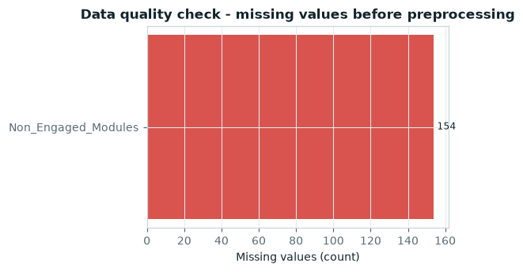
Only Non_Engaged_Modules is sparse; blanks mean the learner has no flagged lesson and are imputed as an empty gap list.
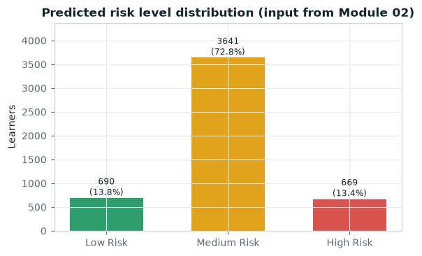
Risk bands consumed from the prediction module drive the intervention weighting.
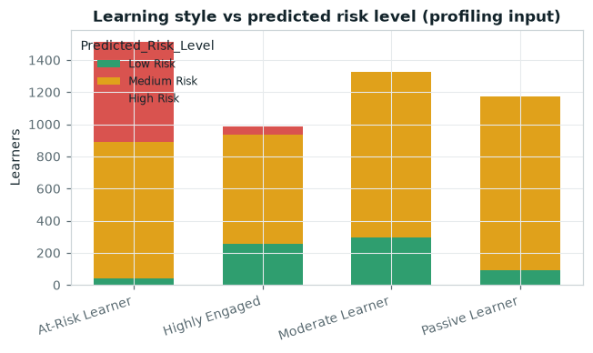
At-Risk and Passive learners concentrate in the medium/high bands, which is what the format matcher reacts to.
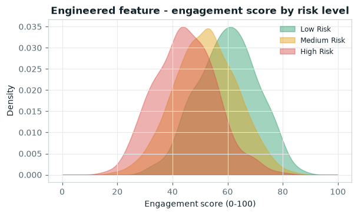
Engagement intensity is a weighted composite of logins, LMS time, clicks, resources, forum activity and attendance.
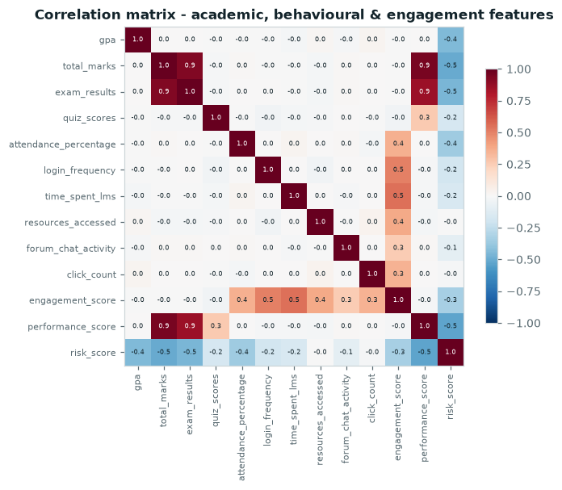
Confirms academic and behavioural blocks carry complementary (not redundant) signal.
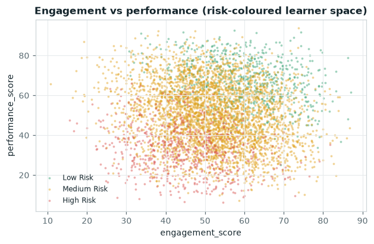
The learner space the recommender operates over; interventions differ across these quadrants.
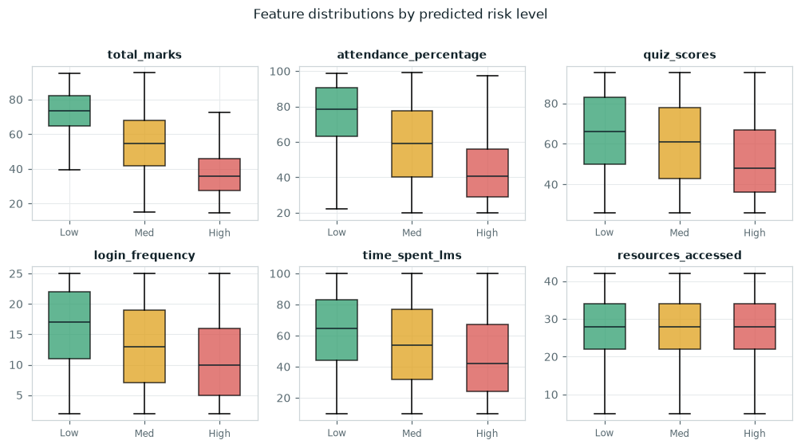
Behavioural spread per band - the basis of the context-aware weighting.
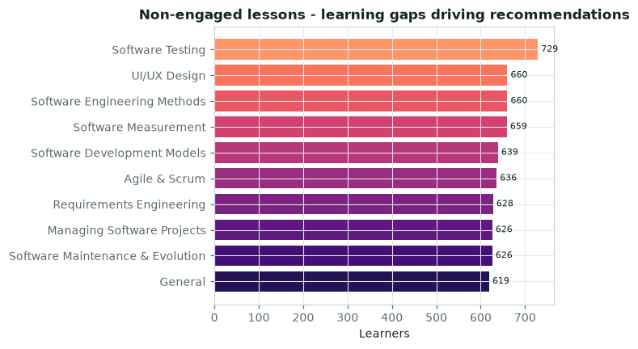
Gap frequency across the cohort; each gap becomes a Student -> Lesson edge in the knowledge graph.
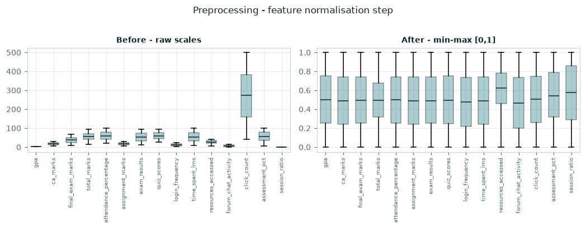
Min-max scaling puts every engineered feature on a comparable range before modelling.
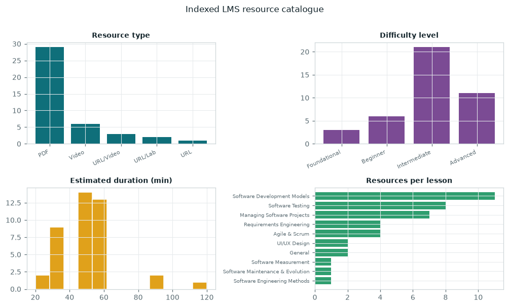
41 LMS resources across 10 lessons form the candidate pool.
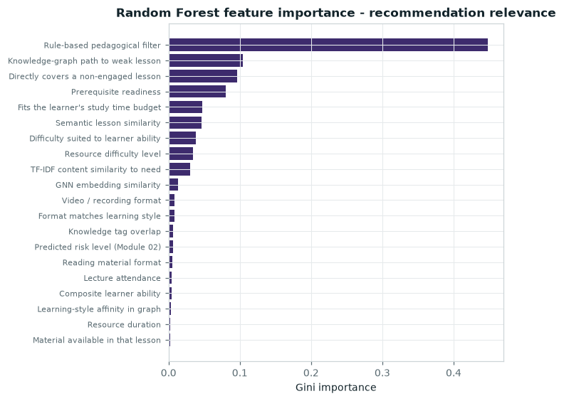
Which signals the ranker actually leans on when scoring a learner-resource pair.
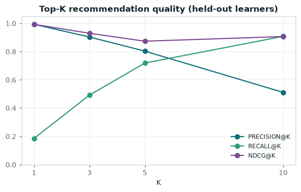
Precision, Recall and NDCG at K on learners never seen during training.
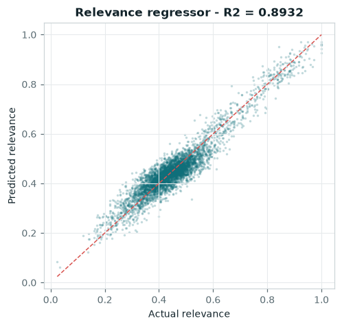
RMSE 0.0408 / MAE 0.0325 on held-out pairs.
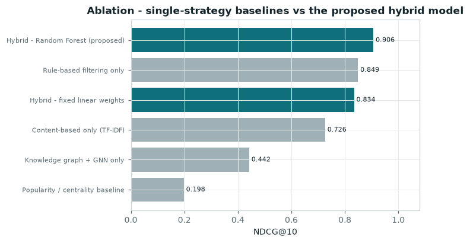
The hybrid Random Forest fusion beats every individual signal used alone.
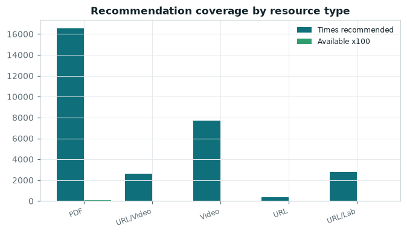
How often each delivery format reaches a learner's top-6 versus its share of the catalogue.
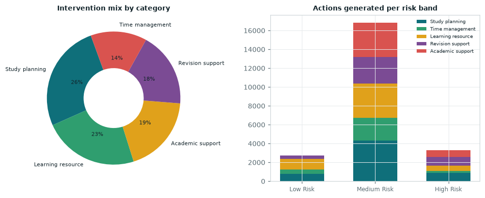
Structured mapping from risk state to study planning, revision, time management, resource and support actions.
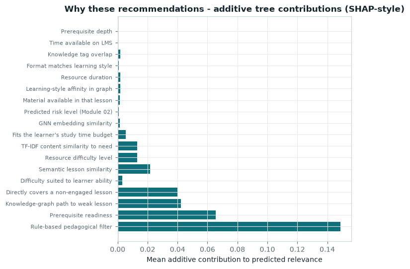
Exact additive attribution over the forest: prediction = bias + sum of contributions.
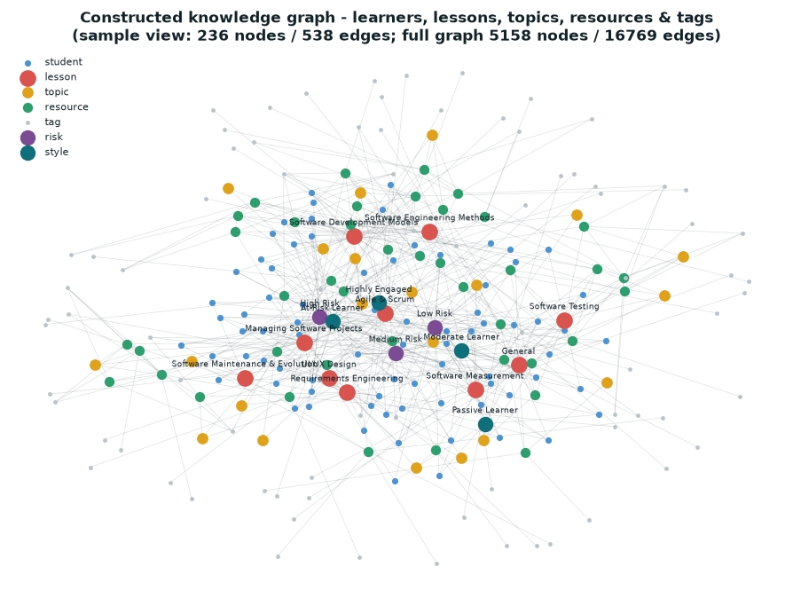
Static preview - open the interactive window for the live force-directed graph.
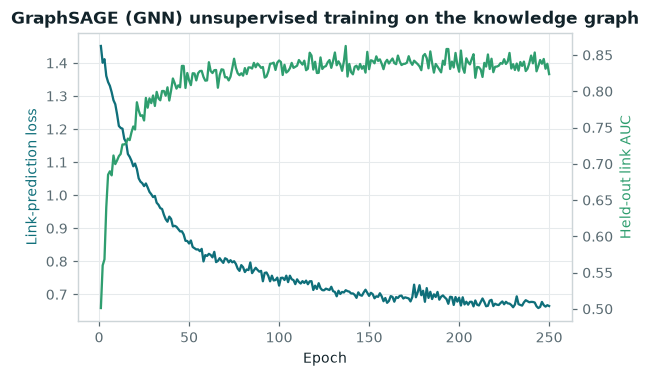
Final held-out link AUC 0.8237 - embeddings feed the graph_score feature.
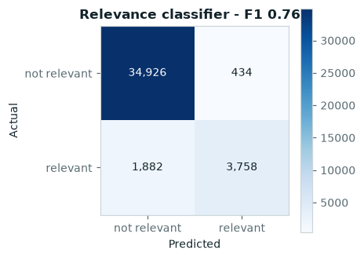
Binary view of the ranker: is this pair inside the learner's relevance set?
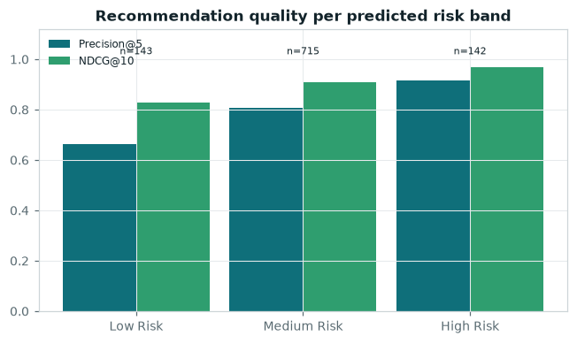
Stability check: the ranker does not degrade for the learners who need it most.
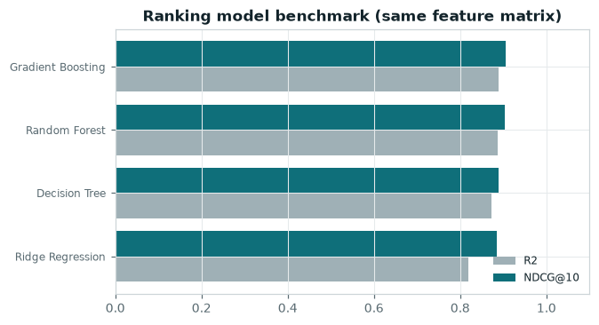
Random Forest is retained as the ranker after benchmarking against linear and boosted alternatives.
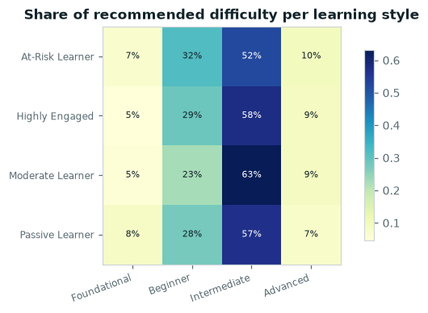
Evidence that the rule layer adapts difficulty to the profiling output.
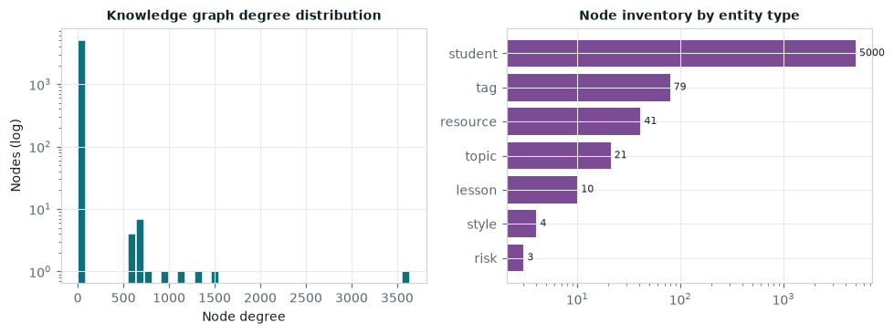
5158 nodes / 16769 edges, average degree 6.5.
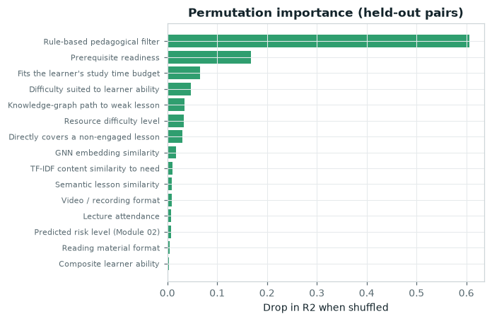
Model-agnostic confirmation of the impurity ranking.
| metric | value |
|---|---|
| precision@1 | 0.993 |
| precision@3 | 0.9033 |
| precision@5 | 0.8032 |
| precision@10 | 0.5112 |
| recall@1 | 0.1859 |
| recall@3 | 0.492 |
| recall@5 | 0.7188 |
| recall@10 | 0.9079 |
| ndcg@1 | 0.993 |
| ndcg@3 | 0.9297 |
| ndcg@5 | 0.8735 |
| ndcg@10 | 0.9065 |
| map@1 | 0.993 |
| map@3 | 0.9881 |
| map@5 | 0.964 |
| map@10 | 0.9141 |
| hit_rate@10 | 1.0 |
| mrr | 0.9958 |
| regression:r2 | 0.8932 |
| regression:rmse | 0.0408 |
| regression:mae | 0.0325 |
| regression:spearman | 0.8698 |
| classifier:accuracy | 0.9435 |
| classifier:precision | 0.8965 |
| classifier:recall | 0.6663 |
| classifier:f1 | 0.7644 |
| classifier:roc_auc | 0.9615 |
| catalogue:catalogue_coverage | 0.9756 |
| catalogue:intra_list_lesson_diversity | 0.4848 |
| catalogue:distribution_entropy | 4.9611 |
| catalogue:gini | 0.9626 |
| risk band | learners | precision@5 | recall@10 | ndcg@10 |
|---|---|---|---|---|
| High Risk | 142 | 0.9155 | 0.9744 | 0.9695 |
| Low Risk | 143 | 0.6643 | 0.8328 | 0.8294 |
| Medium Risk | 715 | 0.8087 | 0.9097 | 0.9094 |
| strategy | precision@5 | recall@10 | ndcg@10 | map@10 | mrr |
|---|---|---|---|---|---|
| Hybrid - Random Forest (proposed) | 0.8032 | 0.9079 | 0.9065 | 0.9141 | 0.9958 |
| Rule-based filtering only | 0.7402 | 0.8375 | 0.8489 | 0.8922 | 0.9932 |
| Hybrid - fixed linear weights | 0.6862 | 0.841 | 0.8342 | 0.8525 | 0.9763 |
| Content-based only (TF-IDF) | 0.5472 | 0.7418 | 0.726 | 0.7776 | 0.9307 |
| Knowledge graph + GNN only | 0.343 | 0.4872 | 0.4421 | 0.5148 | 0.6247 |
| Popularity / centrality baseline | 0.1654 | 0.2302 | 0.1977 | 0.2953 | 0.3434 |
| model | r2 | rmse | precision@5 | ndcg@10 | fit_seconds |
|---|---|---|---|---|---|
| Random Forest | 0.8865 | 0.0421 | 0.7964 | 0.9041 | 7.89 |
| Gradient Boosting | 0.89 | 0.0415 | 0.7994 | 0.9049 | 35.19 |
| Decision Tree | 0.8726 | 0.0446 | 0.7796 | 0.89 | 0.88 |
| Ridge Regression | 0.8188 | 0.0532 | 0.7718 | 0.8849 | 0.03 |